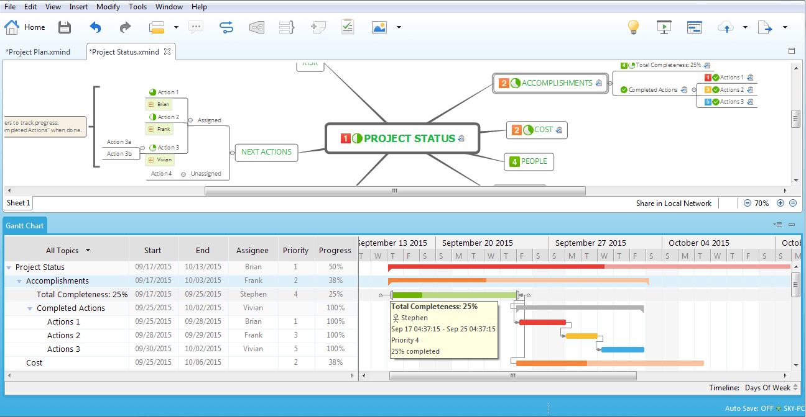
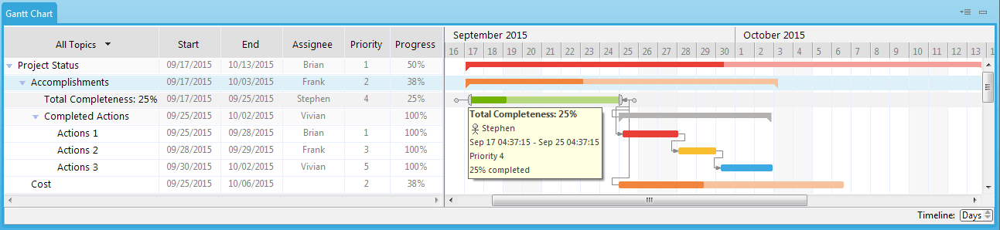
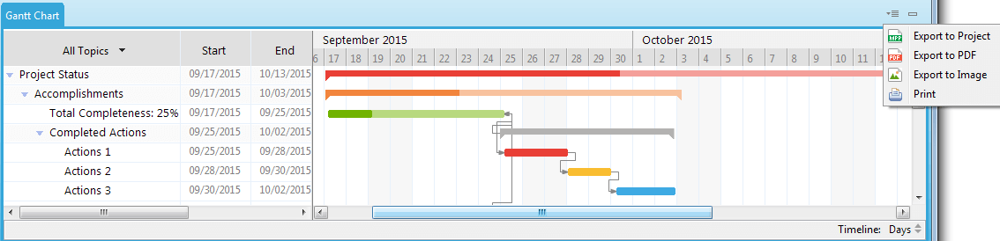
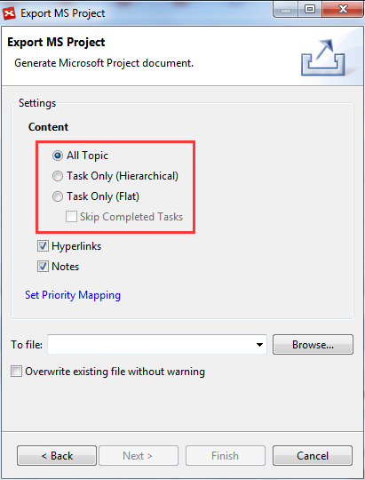
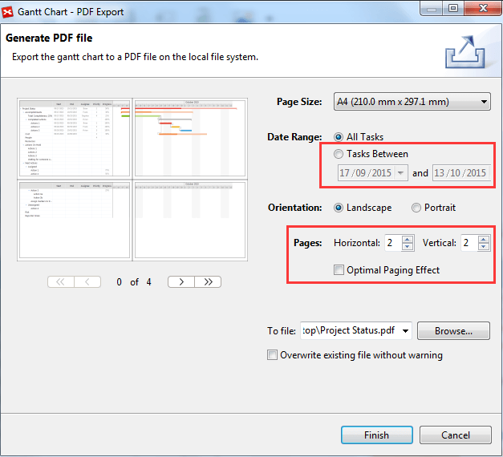
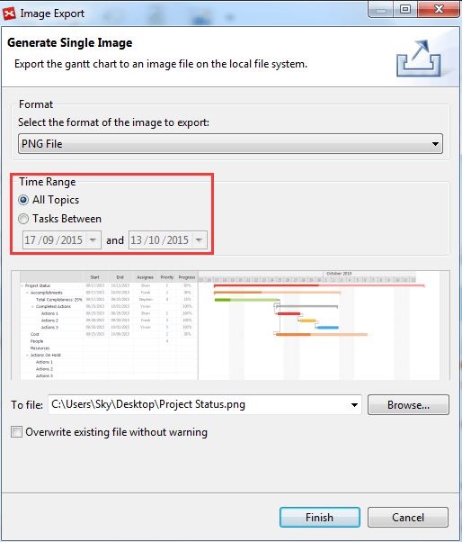
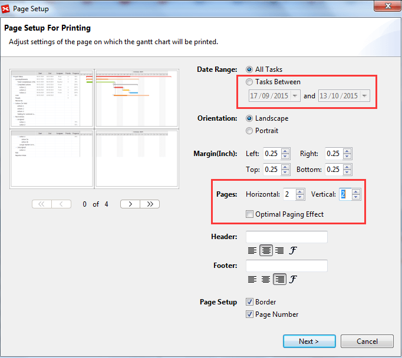

Gantt Chart
After adding all task details in the TaskInfo view, you can navigate them in the Gannt Chart view. Please select 'Window - Show Gantt Chart' from menu.
Gantt Chart View
The upper half is the mind map, and the bottom half is the Gantt Chart view. Gantt Chart always shows the tasks in current mind map. So its content will be changed while transferring to a different map, sheet, and even drilldown a branch.
Gantt Chat view has two parts, tree style tasks list and task bar view with time indicator.

- On the left part, you can also edit task info, including Start/End Date, Assignee, Priority and Progress.
- On the right part, you can see the task bars. Different colors mean different priorities. The line between two tasks means the these two tasks have dependency relationship.
Besides navigating the tasks, here you also can,
- Change timeline scale to Hours, Days, Days of week, Weeks or Months.
- Move the mouse to a task, show all its details, like start/end date, priority, and status.
- Select a task and move, you can change its start/end date.
- Select one end of a task and move, you can change its duration.
- Select the little circle at start or end of a task and you can link to any a task. Then you can set a dependency relationship between them.
Note: the Dependency type
- Finish to Start, Task A cann't be started untill Task B is finished.
- Start to Finsih, Task A cann't be finished untill Task B is started.
- Start to Start, Task A cann't be started untill Task B is started.
- Finish to Finish, Task A cann't be finished untill Task B is finished.
In XMind 7, Gantt chart view can be exported to multiple formats and printed to multi-pages.

To export Gantt chart to Microsoft Project:
- Click "Export to Project" from the dropdown menu at the upper right corner of the view.
- In the coming dialog, check the content you want to export.
- Choose the file location you want to export to.

To export Gantt chart to PDF map:
- Click "Export to PDF" from the dropdown menu at the upper right corner of the view.
- Adjust the export settings in the coming export dialog.
- Choose the location you want to export to.

To export Gantt chart to image:
- Click "Export to image" from the dropdown menu at the upper right corner of the view.
- Adjust the export settings in the coming export dialog.
- Choose the location you want to export to.

To print Gantt chart:
- Click "Print" from the dropdown menu at the upper right corner of the view.
- Adjust the page print settings in the coming dialog.
- Click "Next" to choose a printer.
- Click "Print" to finish.
